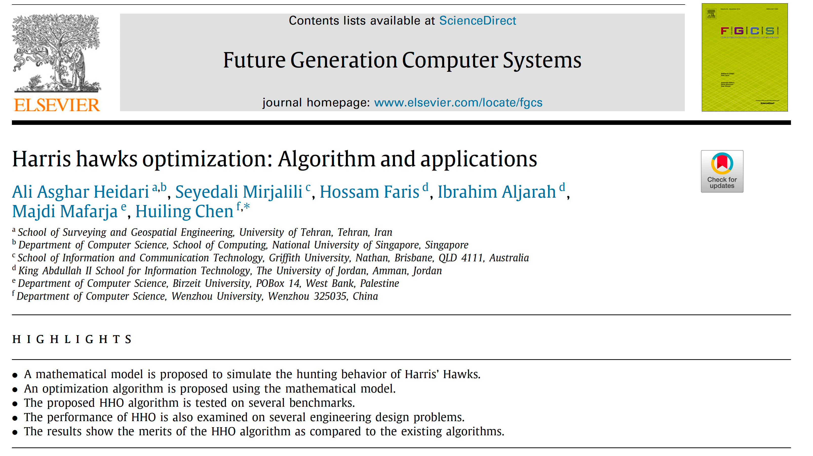
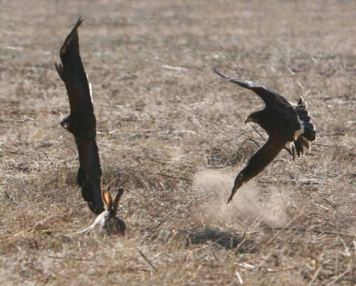
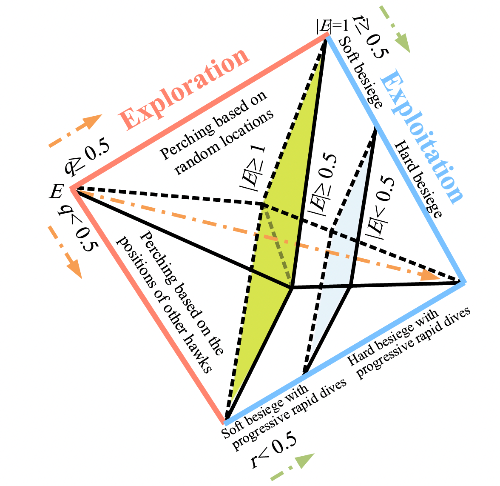
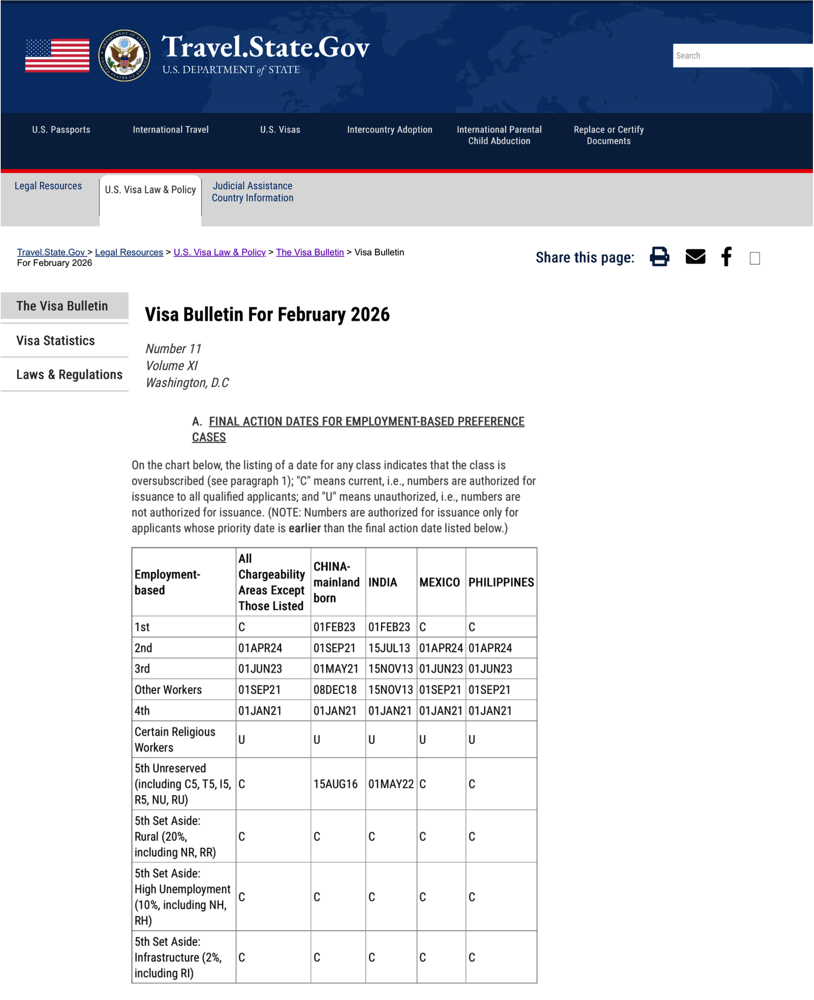
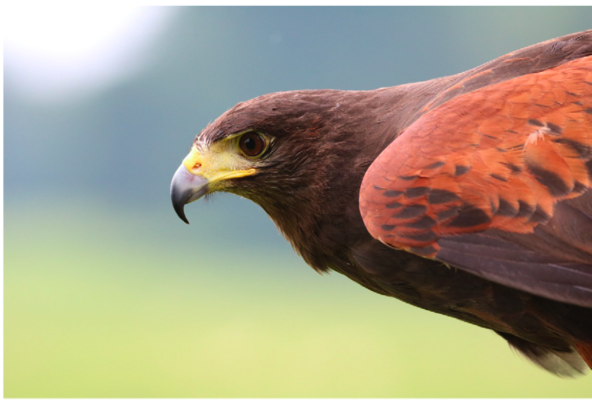

Maestría en Inteligencia Artificial y Analítica de Datos
Proyecto Final · Fase 01
Optimización Multiobjetivo de la Asignación de Green Cards en EE.UU. mediante Harris Hawks Optimization
Yazmín I. Flores Martínez · Javier A. Rebull Saucedo
Optimización Inteligente · Mtro. Raúl Gibrán Porras Alaniz · 17 de febrero de 2026
¿Qué Son las Metaheurísticas?
De los métodos exactos a la búsqueda inteligente inspirada en la naturaleza
Definición: Las metaheurísticas son algoritmos de optimización inspirados en la naturaleza que buscan soluciones de alta calidad para problemas donde los métodos exactos fallan. Su fortaleza: balancean exploración (buscar en zonas nuevas del espacio) y explotación (refinar zonas prometedoras). Son ideales para problemas con variables enteras, espacios no convexos y miles de dimensiones donde no existe solución analítica.
✓ Sin derivadas ni linealidad ✓ Escala a miles de variables ✓ Maneja enteros y discontinuidades
Trade-off: Soluciones muy buenas, no exactas
01
La Metaheurística
Harris Hawks Optimization (HHO) · Heidari et al., 2019
El Algoritmo Seleccionado
Harris Hawks Optimization (HHO)
Referencia del artículo
Heidari, A. A., Mirjalili, S., Faris, H., Aljarah, I., Mafarja, M., & Chen, H. (2019). Harris hawks optimization: Algorithm and applications.Future Generation Computer Systems, 97, 849–872.
Inspiración biológica única: cacería cooperativa del halcón de Harris — estrategia surprise pounce.
2
6 operadores de búsqueda: más riqueza que GA (Algoritmos Genéticos, que usan solo 2-3 operadores: selección, cruce y mutación). Incluye vuelos de Lévy para saltar discontinuidades.
3
Solo 2 parámetros: N (población) y T (iteraciones). Sin tunning complejo.
4
Extensión MOHHO: validada para optimización multi-objetivo con archivo Pareto externo.

articleimage.png
'">
¿Por qué Harris Hawks Optimization?
Selección y originalidad de la metaheurística
Parabuteo unicinctus — caza cooperativa en grupo
Metaheurística
Estatus
Algoritmos Genéticos
✗ En clase
Enjambre de Partículas
✗ En clase
Colonias de Hormigas
✗ En clase
Colonias de Abejas
✗ En clase
Recocido Simulado / Tabú
✗ En clase
NSGA-II (multiobjetivo)
✗ En clase
Harris Hawks (HHO)
✓ Original
Inspiración única: caza cooperativa de halcones de Harris. No pertenece a ninguna familia del temario.
Moderno y validado: publicado en 2019, revista Q1 de Elsevier, más de 5,000 citaciones.
6 operadores distintos (otros algoritmos modernos tienen 2 o 3). Mayor riqueza de estrategias.
Extensión multiobjetivo demostrada (MOHHO), validada contra algoritmos establecidos.
Solo 2 parámetros: tamaño de población ($N$) y número de iteraciones ($T$).

'">
Parabuteo unicinctus
Inspiración Biológica
La cacería cooperativa del halcón de Harris
En la naturaleza
En la optimización
Cada halcón del grupo
Una solución candidata
La presa (conejo)
La mejor solución encontrada
Energía de escape
Parámetro $E$: exploración vs. explotación
Estrategias de caza (6)
Los 6 operadores de movimiento
Captura exitosa
Mejora del valor de fitness
Surprise Pounce — La estrategia clave
Los halcones de Harris son los únicos rapaces que cazan en equipo. Rodean al conejo desde múltiples direcciones y atacan en oleadas sucesivas. Si la presa escapa de un halcón, otro toma el relevo. HHO modela exactamente este comportamiento: cada halcón (solución) adapta su estrategia según la energía de escape de la presa, alternando entre búsqueda amplia (exploración) y cerco agresivo (explotación).
El Motor: Energía de Escape
Transición adaptativa entre exploración y explotación
En Recocido Simulado, la temperatura baja de forma determinista (monotónica). En HHO, $E_0$ es aleatorio en cada iteración, lo que hace que el algoritmo oscile naturalmente entre exploración y explotación incluso en etapas avanzadas. Esto le da una ventaja crucial: puede escapar de óptimos locales tarde en la optimización, algo que Recocido Simulado ya no puede hacer porque su temperatura ya bajó.

hho_fases.png — Fig. 3 del paper
'">
Fig. 3: Comportamiento de E a lo largo de las iteraciones (Heidari et al., 2019)
La energía E es el corazón de HHO. Controla cuándo los halcones buscan ampliamente (|E| alto → exploración global) y cuándo cierran el cerco (|E| bajo → explotación local). La aleatoriedad de E₀ evita que el algoritmo quede atrapado en óptimos locales, a diferencia de esquemas con decaimiento fijo.
Lectura del diagrama: Cada halcón calcula la energía E en cada iteración. Si |E|≥1 la presa aún tiene energía, así que el halcón explora globalmente con los Operadores 1-2 (búsqueda amplia). Si |E|<1 la presa está agotada, entonces explota localmente: usa Ops 3-4 (cerco directo) si la presa no escapa, o Ops 5-6 con vuelos de Lévy (saltos largos) si logra escapar. El ciclo se repite T veces hasta convergencia.
02
Los 6 Operadores
2 de exploración + 4 de explotación
Fase de Exploración: Operadores 1 y 2
$|E| \geq 1$ — La presa tiene alta energía, los halcones buscan ampliamente
Explicación: Cuando la presa tiene mucha energía (|E|≥1), los halcones buscan ampliamente. El Op 1 salta hacia un halcón aleatorio del grupo (diversificación pura). El Op 2 combina la dirección hacia la presa con la posición media del enjambre, explorando de forma más dirigida pero aún global.
Fase de Explotación: Operadores 3 y 4
$|E| < 1$, $r \geq 0.5$ — La presa no logra escapar del cerco
La presa está exhausta. Cierre agresivo hacia ella.
$\Delta\mathbf{X} = \mathbf{X}_{\text{rabbit}} - \mathbf{X}_i$ (vector hacia la presa) · $J = 2(1 - r_5)$ (fuerza de salto de la presa)
Explicación: Cuando la presa está debilitada (|E|<1) y no logra escapar (r≥0.5), los halcones cierran el cerco. El Op 3 (asedio suave, |E|≥0.5) hace movimientos amplios pero dirigidos — la presa aún tiene algo de energía. El Op 4 (asedio duro, |E|<0.5) es un cierre agresivo directo — la presa está exhausta.
Explotación con Vuelos de Lévy: Ops 5 y 6
$r < 0.5$ — La presa escapa, los halcones ejecutan inmersiones de largo alcance
Vuelo de Lévy: distribución con colas pesadas. Pasos cortos (refinamiento) con saltos largos ocasionales (escape de óptimos locales).
Selección greedy: Probar Y primero. Si no mejora, probar Z. Si ninguno mejora, conservar posición actual.
Explicación: Cuando la presa escapa (r<0.5), los halcones ejecutan inmersiones de largo alcance usando vuelos de Lévy — una distribución con colas pesadas que genera muchos pasos cortos y ocasionalmente saltos enormes. Esto permite escapar de óptimos locales. Se prueban dos soluciones (Y, Z) con selección greedy: se conserva la mejor.
Mapa Completo de Operadores
Lógica de decisión del algoritmo HHO
Condición
Estrategia
Tipo
Op.
$|E| \geq 1$, $q \geq 0.5$
Perchado aleatorio
Exploración
1
$|E| \geq 1$, $q < 0.5$
Perchado presa-media
Exploración
2
$|E| < 1$, $r \geq 0.5$, $|E| \geq 0.5$
Asedio suave
Explotación
3
$|E| < 1$, $r \geq 0.5$, $|E| < 0.5$
Asedio duro
Explotación
4
$|E| < 1$, $r < 0.5$, $|E| \geq 0.5$
Asedio suave + Lévy
Explot. + Lévy
5
$|E| < 1$, $r < 0.5$, $|E| < 0.5$
Asedio duro + Lévy
Explot. + Lévy
6
Parámetros del usuario: solo $N$ (población) y $T$ (iteraciones). $E_0$, $q$, $r$ son aleatorios y autoadaptativos.
Resumen: HHO usa un árbol de decisión con 3 variables aleatorias (E, q, r) para seleccionar entre 6 operadores. Esto genera un balance automático exploración/explotación sin que el usuario necesite configurar parámetros adicionales — una ventaja significativa respecto a otros algoritmos que requieren ajuste manual de tasas de mutación, inercia, etc.
03
El Problema
Asignación de Green Cards basadas en empleo en Estados Unidos
Fig. 1: El presidente Trump anuncia una pausa migratoria, noviembre de 2025. Fuente: CNBC.
“
They're bringing drugs. They're bringing crime. They're rapists. And some, I assume, are good people.
— Donald J. Trump, anuncio de candidatura, 2015
Desde 2015, las políticas migratorias de EE.UU. se endurecieron significativamente. El sistema de Green Cards basadas en empleo no se ha reformado desde 1990, generando un cuello de botella que afecta a 1.8 millones de personas. Las restricciones políticas son las constraints matemáticos de nuestro modelo.
1.8M
personas en espera
134
años de espera (India EB-2)
10
años de restricciones
La Problemática
El sistema Employment-Based (EB) de Green Cards en EE.UU.
La problemática en una oración
140,000 green cards anuales para 1.8 millones de solicitantes, donde el tope del 7% por país trata igual a India (1,400M hab.) que a Islandia (380K hab.), generando esperas de hasta 134 años.
134
años de espera
140K
green cards/año
1.8M
en cola
7%
tope por país
Categorías Employment-Based (INA, 1990)
Cat.
Descripción
%
GC/año
EB-1
Trabajadores prioritarios
28.6%
~40,040
EB-2
Grado avanzado
28.6%
~40,040
EB-3
Trabajadores calificados
28.6%
~40,040
EB-4
Inmigrantes especiales
7.1%
~9,940
EB-5
Inversionistas
7.1%
~9,940

visa_bulletin.png
'">
Visa Bulletin, febrero 2026 — U.S. Department of State
Reglas de Spillover
Las green cards no utilizadas se redistribuyen de forma condicional
Resultado: Las green cards por categoría son variables dependientes con restricciones condicionales no lineales. Las visas de una categoría dependen del consumo de otras, haciendo imposible modelar el sistema con programación lineal.
Complejidad
¿Por qué es NP-Difícil?
Equivalente a tres problemas clásicos NP-difícil combinados.
10K+
dimensiones
3
objetivos
Garey & Johnson (1979)
Equivalencia con problemas clásicos
Asignación Generalizada
Asignar solicitantes a slots con capacidades heterogéneas por país y categoría.
Mochila Multidimensional
Como una mochila con varias restricciones de peso simultáneas: maximizar valor (visas usadas) sin exceder capacidad en cada categoría.
Scheduling con Recursos
Ordenar colas FIFO con recursos limitados, precedencias temporales y dependencias cruzadas.
Los tres obstáculos matemáticos
A · Integralidad
No se puede asignar 0.3 visas. Cada green card es indivisible.
25,619 visas = legal. 25,621 = ilegal. Discontinuidades tipo acantilado.
¿Qué significa NP-Difícil?
NP = Nondeterministic Polynomial time. Un problema es NP-difícil si no se conoce un algoritmo que lo resuelva en tiempo polinómico — es decir, conforme crecen las variables, el tiempo de solución exacta crece exponencialmente. Para 10,000+ variables enteras con restricciones no lineales, un solver exacto tardaría años. La Mochila Multidimensional es un ejemplo clásico: elegir ítems que maximicen valor sin exceder múltiples capacidades simultáneas — exactamente lo que hacemos al repartir 140,000 visas entre categorías con topes legales cruzados. Por eso necesitamos una metaheurística como HHO.
Tres objetivos en conflicto y adaptación multiobjetivo
Tres Objetivos en Conflicto
No existe una solución que optimice los tres simultáneamente — por eso es multi-objetivo
f₁ — Minimizar tiempo de espera promedio
Reducir los años que cada persona espera. India EB-2 espera 134 años. Cada punto de mejora aquí son miles de familias reunidas antes.
f₂ — Maximizar equidad entre países
Minimizar disparidad de tiempos entre nacionalidades. El tope del 7% busca equidad pero genera distorsiones extremas entre países grandes y pequeños.
f₃ — Maximizar utilización de visas
Evitar visas desperdiciadas. Países pequeños no llenan cuotas mientras otros tienen colas enormes. Cada visa perdida = una persona más esperando.
f₁ vs f₂: Dar más a India/China reduce espera pero viola equidad.
f₂ vs f₃: 7% estricto genera desperdicio en países pequeños.
f₁ vs f₃: Maximizar uso favorece colas cortas, posterga las largas.
Impacto social: ¿por qué importa?
1.8 millones de personas esperan una Green Card. Cada variable de nuestro modelo representa a una familia real. Este problema es inherentemente multi-objetivo: rapidez, justicia y eficiencia son metas sociales legítimas pero contradictorias. No buscamos una solución — buscamos un frente de Pareto que le dé al gobierno opciones informadas para decidir el balance.
Adaptación Multiobjetivo: MOHHO
Tres mecanismos adicionales al HHO estándar para manejar múltiples objetivos
¿Qué es el Frente de Pareto?
Conjunto de soluciones donde ninguna puede mejorar en un objetivo sin empeorar otro. Cada punto azul es una asignación diferente de visas. No hay una "mejor" — el gobierno elige según sus prioridades.
1. Archivo Externo de Pareto
Se reemplaza la presa única por un archivo de soluciones no dominadas. Solución a domina a b si es mejor o igual en todos los objetivos y estrictamente mejor en al menos uno.
2. Selección por Crowding Distance
Soluciones en regiones menos pobladas del frente tienen mayor probabilidad de ser elegidas como líder, promoviendo diversidad.
3. Decodificador Greedy
Verifica restricciones legales (C1-C6). Si una asignación viola alguna, difiere el grupo. Garantiza factibilidad inherente.
Ventaja de MOHHO
Los 6 operadores de HHO generan diversidad natural. Los vuelos de Lévy saltan discontinuidades del tope del 7%. El archivo Pareto preserva las mejores soluciones no dominadas.
Mapeo: HHO → Green Cards
Cada componente del algoritmo se traduce en una acción sobre la distribución de 140,000 visas
Halcón individual Solución candidata Xᵢ
→
Distribución completa de 140,000 visas Permutación del orden de procesamiento de cohortes
Presa (conejo) Mejor solución / líder Pareto
→
Asignación no dominada del archivo Pareto Mejor compromiso entre f₁, f₂, f₃
Energía de escape E E = 2E₀(1 - t/T)
→
Fase de la optimización |E|≥1: distribuciones diferentes · |E|<1: ajuste fino
Exploración (Ops 1-2) Búsqueda global amplia
→
Probar asignaciones radicalmente diversas Redistribuir visas entre países/categorías
Vuelos de Lévy (Ops 5-6) Saltos de largo alcance
→
Saltar discontinuidades del tope del 7% 0 vs. 25,620 visas (máximo legal) — romper el acantilado
Fitness (captura)
→
Evaluación de f₁, f₂, f₃ + dominancia Pareto
Síntesis: Cada halcón es una propuesta completa de cómo repartir 140,000 visas. La "cacería" es el proceso iterativo. Los vuelos de Lévy saltan las discontinuidades del 7%, y la dominancia de Pareto reemplaza al fitness simple.

Fase 01 · Cierre
Conclusiones y Trabajo Futuro
Hallazgos principales y la ruta hacia la implementación completa del modelo MOHHO.
Conclusiones de la Fase 01
HHO es un candidato prometedor gracias a sus 6 operadores adaptativos y su transición estocástica entre exploración y explotación.
El problema de Green Cards es NP-difícil, multiobjetivo, con restricciones no lineales: ideal para metaheurísticas.
El impacto social directo — 1.8 millones de personas en espera — justifica esta línea de investigación.
Trabajo Futuro
Fase 022do parcial
Modelo matemático completo con datos reales del Visa Bulletin
Formulación formal de restricciones con spillover dinámico
Llegué a EE.UU. en 2012. Años de incertidumbre migratoria. Obtuve mi Green Card, pero el alivio vino con una pregunta: ¿por qué tuvo que ser así? Cada variable $x_{i,t}$ representa a una persona real.
'">
Javier A. Rebull Saucedo
Vivo en Boston desde 2013. Dos procesos de Green Card fallidos. 13 años con permiso temporal. Sigo esperando. Elegimos este problema porque es nuestro problema.
Los halcones cazan en equipo porque un halcón solo no puede atrapar un conejo que zigzaguea.
Cooperación, adaptación y persistencia.
Gracias. Estamos listos para sus preguntas.
Referencias
Bibliografía en formato APA 7 · 16 fuentes consultadas
Alabool, H. M., et al. (2021). Harris hawks optimization: A comprehensive review. Neural Comp. & Applications, 33(15).
Bansak, K. & Paulson, E. (2024). Outcome-driven dynamic refugee assignment. Operations Research, 72(5).
Boundless Immigration. (2024). Indian workers face up to 134-year wait for a green card.
Çerçi, S. & Dönmez, E. (2022). Hybrid multi-objective Harris Hawk optimization. Adv. in Eng. Software, 173.
Congressional Research Service. (2023). U.S. employment-based immigration policy (R47164).
Freund, D., et al. (2023). Group fairness in dynamic refugee assignment. arXiv:2301.10642.
FWD.us. (2024). Per-country cap reform: Priority bill spotlight.
Garey, M. R. & Johnson, D. S. (1979). Computers and Intractability. W. H. Freeman.
Heidari, A. A., et al. (2019). Harris hawks optimization: Algorithm and applications. Future Gen. Computer Systems, 97. Paper principal
Kuşoğlu, İ. & Yüzgeç, U. (2020). Multi-objective Harris Hawks optimizer. BSEU J. Eng. Research, 1(1).
Li, G., Gong, M. & Li, H. (2024). Towards fairness-aware multi-objective optimization. Complex & Intell. Systems, 10.
Li, J. & Wu, M. (2023). Enhancing the Harris' Hawk optimiser. Soft Computing, 27(21).
Pathak, P., et al. (2025). Immigration lottery design. Rev. of Economics & Statistics, 107(1).
U.S. Citizenship & Immigration Services. (2023). FY 2023 EB adjustment of status FAQs.
U.S. Department of State. (2026). Visa bulletin for February 2026.
Zhang, L., Li, Y. & Wang, X. (2023). Improved HHO with bi-goal evolution. Ingénierie des Systèmes d'Information, 28(5).